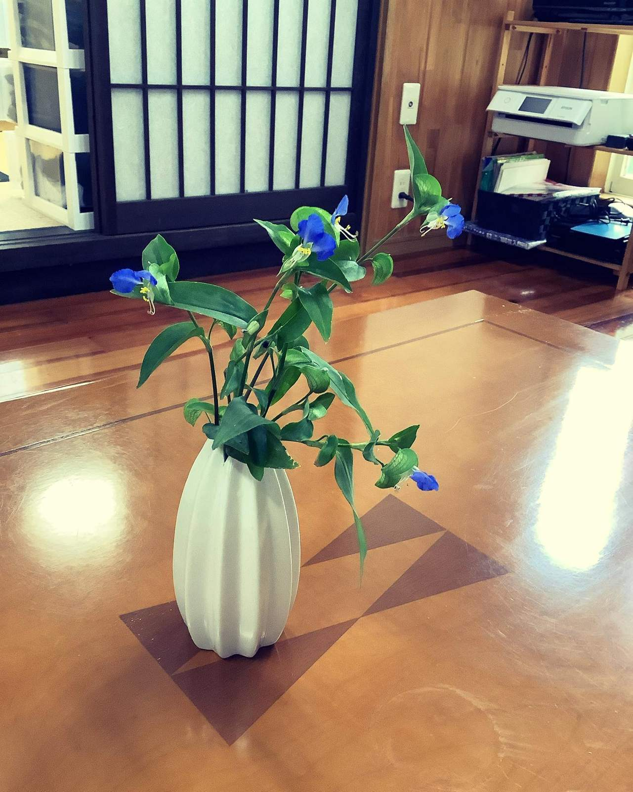
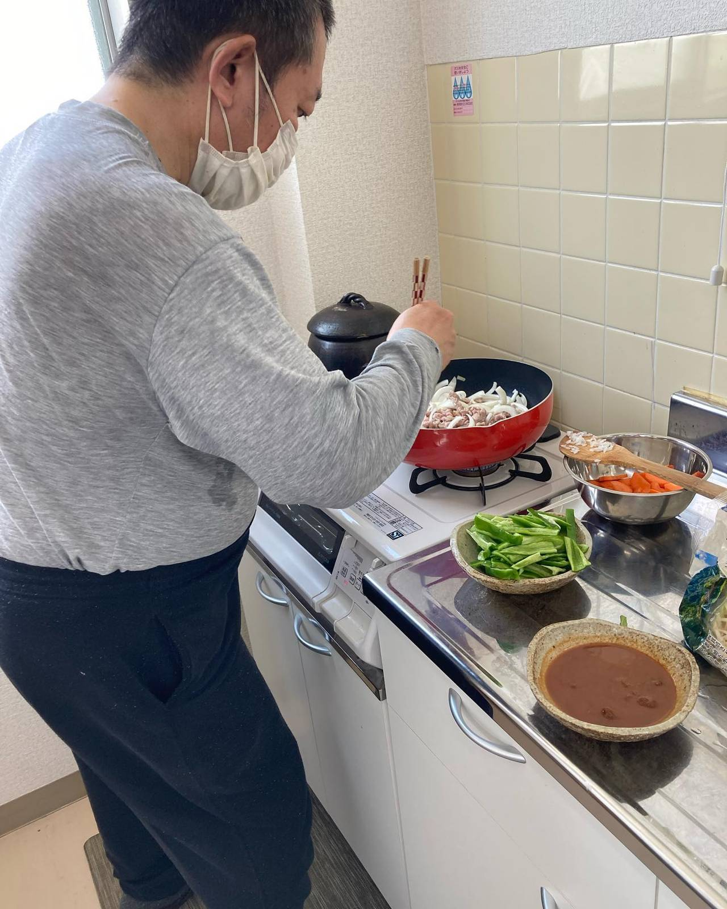
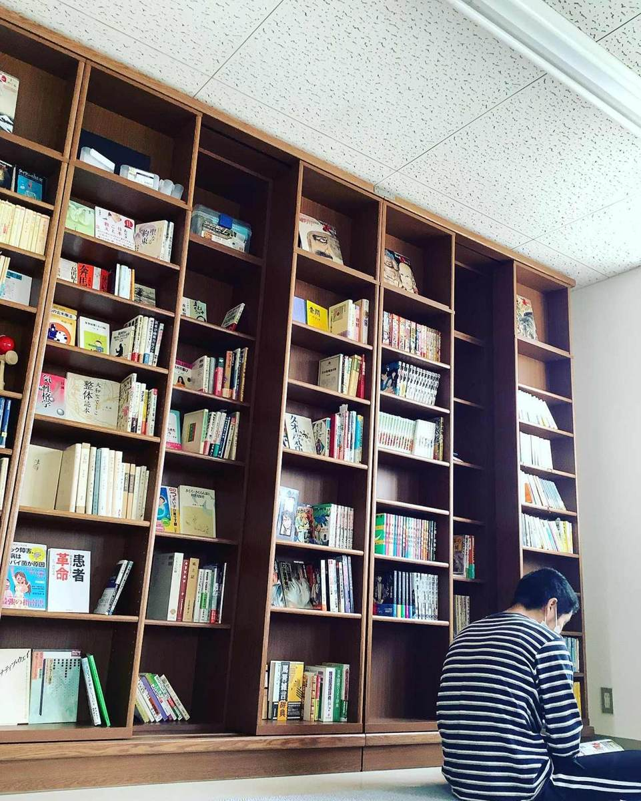
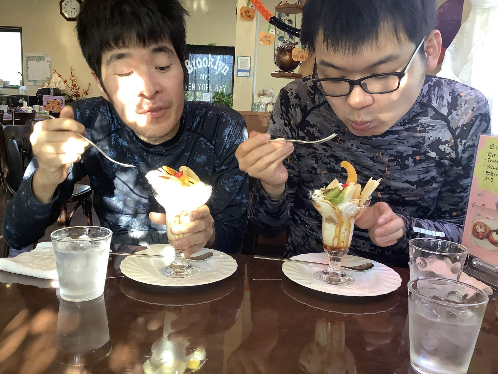

料理・喫茶・読書・アートで、静かに穏やかに過ごします。
生産活動やノルマを無理強いすることは一切ありません。ご自身のペースで、ただ安心してゆったり過ごしていただくことに専念できる場所です。
FIRST STEP
社会参加への第一歩は、ここから。
似た者同士だからこそ安心できる、やさしいスペースです。
少人数で活動しているため、人と関わるのが苦手な方でも安全に心地よく過ごしていただけます。強度行動障害の方もまずはご相談ください。

四季を感じる生け花・アート

みんなで楽しむ手作り料理

静かに没頭できる読書スペース

喫茶で過ごすホッとする時間
INFORMATION
開所時間・場所
- 営業時間
- 平日 11:00 ～ 15:00
- アクセス
- 三重県四日市市あさけが丘2-1-42
（三岐鉄道三岐線 山城駅より徒歩12分） - 見学について
- 完全予約制（お電話または公式LINEにて承ります）
RELATED